Patch notes for the probe: the layer that lets an agent load the courtyard headless, read the scene as data, see it through see-through layers, play it with scripted input, and check every result. Newest entry first. Every number here comes from a real run on this Mac (Apple M5, Metal).
A · frozen modeB · scene as dataC · cameras and shotsD · see-through layersD · cost meter under GPU loadE · scripted playF · tour and visual diffsfps question answeredLive: 2 game bugs fixed, deploy fafc78f3
v1.42026-09-23 21:45
Live on sigouin.net: probe, fountain rim and windmill
What shipped
Deployment fafc78f3. Only /hub/ changed: index.html and 10 new asset files, including the 28 KB probe file that only ?probe fetches. Release note and rollback: sigouin-net/releases/hub-probe-20260923/.
Same bytes as tested
The deployed build is byte-identical to the build the final tours and gate ran against. After deploy, /hub/?cb= showed the new entry file on the first poll. Then all 14 hub files, with no query string, returned 200 with the right types and matching sha256.
Checked on the live site
Landing to hub and back, and walking out the gate: 2 of 2 tests passed.
Normal visit: 4 scripts, no probe code, 0 console errors.
?probe&freeze: 0 px different across two loads on 5 views.
A crashed script left the GPU lock behind, and the next run waited 10 minutes for it. The lock now takes over when its owner process is gone, and did so on the next run.
Not tested
A real phone or on-screen browser.
$ CONFIRM_DEPLOY=1 ../deploy/deploy.sh
✨ Success! Uploaded 11 files (3577 already uploaded) (1.74 sec)
✨ Deployment complete! Take a peek over at https://fafc78f3.sigouin-net.pages.dev
$ curl https://sigouin.net/hub/?cb=… # first poll
21:30:44 assets/index-DacjnP62.js
$ hash check, no query string
14 ok, 0 bad
$ SITE_URL=https://sigouin.net LEAVE_URL=https://sigouin.net/hub/ npx playwright test tests/site.spec.ts tests/leave.spec.ts --project=desktop
✓ 1 [desktop] › tests/leave.spec.ts:8:1 › walking out the entrance goes back to the landing page @desktop (9.5s)
✓ 2 [desktop] › tests/site.spec.ts:10:1 › landing to hub and back @desktop (12.9s)
2 passed (24.8s)
$ node scratchpad/live.mjs # probe against https://sigouin.net/hub/
normal visit: 4 scripts, probe code in any: false, __probe on window: false, console errors: 0
live repeat, px different: spawn=0 fountain=0 aerial=0 corner-se=0 corner-nw=0
live fountain rim flipped pixels: 0
live scripted play: PASS 11/11 steps in 21980 ms
live leave: PASS -> https://sigouin.net/
probe page errors: none
live · fountainlive · corner-se
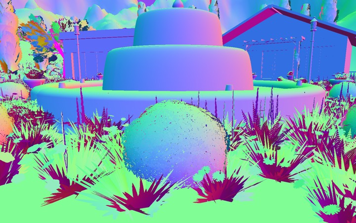
live · rim normals · no magentalive · aerial
v1.32026-09-23 21:12
Final state: new baseline, a calm GPU, everything green
Final full tour
All checks passed.probe/shots/20260923-205852/: 337 shots in 283 s. All 11 views repeat at 0 pixels between page loads on both devices, 34 of 34 canvas textures equal, play 87 of 87 and 67 of 67. It is the baseline now (250 images).
Fresh run vs baseline
A new quick tour against it: 45 same, 0 drift, 0 failed. (A first try said 36 failed: latest had picked an old run whose name was in UTC time. Fixed to pick by finish time.)
Tests and build
Desktop suite 10 passed, 3 skipped (env-gated, as before). npm run build passes. Normal visitors now pay +240 bytes in total (app +58, entry +147, three +32, kit +5, furniture -2); the probe is its own 28 KB file.
With a calm GPU
The Mac's GPU was 87 to 89% busy this time instead of 94 to 99%. Desktop perf: 60 fps, p95 16.7 ms, 4.5 ms per frame (ceiling 221 fps). Phone: 60 fps, 2.4 ms. Cost base: 10.0 ms from spawn, 11.3 ms from aerial.
Cost mutant, retried
Clean catch. Grass read 0.28 ± 0.11 ms, then 0.97 ± 0.08 ms with density doubled, then 0.40 ± 0.11 ms after putting it back. So the meter works when the GPU is not saturated, and stays noisy when it is.
Finding: the player costs the same from far away
Luc's model: 2.58 ms from spawn, 2.60 ms from aerial, where it is a few pixels tall. So the cost does not come from screen area. It is a fixed per-frame cost, so look at skinning, the shadow pass, or the material setup rather than texture size. Not investigated further.
$ node probe/tour.mjs
[ 32s] desktop cost from spawn: EXT_disjoint_timer_query_webgl2 base 9.979 ms, sum of parts 4.817 top player 2.577, bed-foliage 1.371, cypress-leaf 0.739
[ 56s] desktop cost from aerial: EXT_disjoint_timer_query_webgl2 base 11.27 ms, sum of parts 7.651 top player 2.595, grass 1.011, bed-foliage 0.942
[ 65s] desktop repeat load, pixels different: spawn=0 fountain=0 aerial=0 corner-nw=0 corner-ne=0 corner-sw=0 corner-se=0 door-computer-lab=0 door-music-studio=0 door-office=0 door-ai-workspace=0 | canvas textures: 34, differing: none
[ 140s] desktop play PASS 87 steps
[ 161s] desktop perf fps median 60, p95 frame 16.7 ms batch 4.52 ms/frame, ceiling 221.2 fps GPU busy before 89%
[ 191s] phone repeat load, pixels different: spawn=0 fountain=0 aerial=0 corner-nw=0 ... door-ai-workspace=0 | canvas textures: 34, differing: none
[ 264s] phone play PASS 67 steps
[ 283s] phone perf fps median 60, p95 frame 16.7 ms batch 2.41 ms/frame, ceiling 414.9 fps GPU busy before 65%
[ 283s] done: 337 shots in 283 s -> probe/shots/20260923-205852/contact.html
all checks passed
$ node probe/diff.mjs --approve probe/shots/20260923-205852
baseline <- probe/shots/20260923-205852: 250 images
$ node probe/tour.mjs --quick && node probe/diff.mjs latest
compared 45 images (tol 6, max 0.05%): 45 same, 0 small drift, 0 failed
$ npx playwright test --project=desktop
3 skipped
10 passed (2.2m)
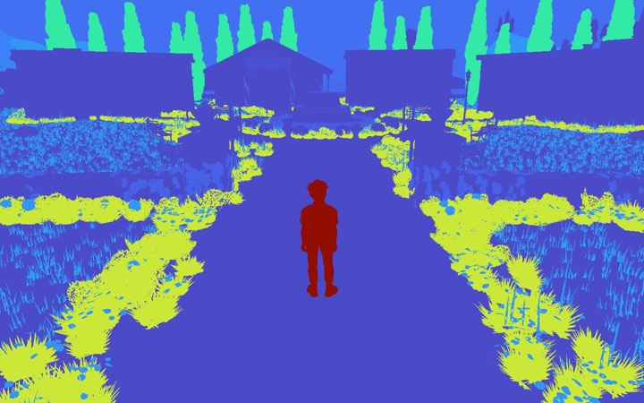
cost · spawn · calm GPU · the player is the hot spot
Second bug found by the probe: the windmill ran on the wall clock
How it showed up
A clean quick tour drifted from the baseline on two fountain orbit shots (91 and 17 pixels, colour jumps up to 76). Below the fail line, but not the one-step drift of v0.9. A zoomed crop showed a windmill sail on the far hill at a different angle.
Cause
src/world/backdrop.ts set the sails from performance.now(), the page's wall clock. Everything else moves on the world clock, which frozen mode stops. So the sails kept turning, and their angle depended on when a shot was taken.
What changed
One line: the sails now turn with the world time uniform, at the same 0.45 radians per second. In the live hub this also means they pause when the tab is hidden, like the fountain and the trees. Not deployed.
How it was checked
The same orbit shot, on fresh pages and after other work, before and after the fix. Before: 68 to 101 pixels different between two fresh pages, and 9 to 78 after a cost pass. After: 0 in all four cases.
The harness got stronger too
The repeat check only compared 3 views, and the windmill is not in any of them. It now compares all 11 views between two page loads. The baseline was re-approved after the fix, since every old shot with the windmill in it has a random sail angle.
Note on v0.9
This is a different bug from the 2-pixel sign drift. That one was one colour step on the Computer Lab sign; this one moved whole sail edges.
$ node scratchpad/dev7.mjs # same orbit shot (fountain, eye height, 90°)
before the fix after the fix
after cost(aerial): 41 px changed after cost(aerial): 0 px changed
after cost(spawn) too: 30 px changed after cost(spawn) too: 0 px changed
fresh page B vs fresh page A: 101 fresh page B vs fresh page A: 0
after all views x layers: 24 px changed after all views x layers: 0 px changed
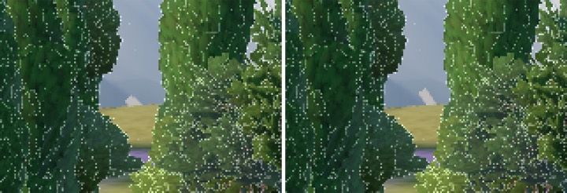
zoomed 4x · left: baseline · right: clean run · the sail moved
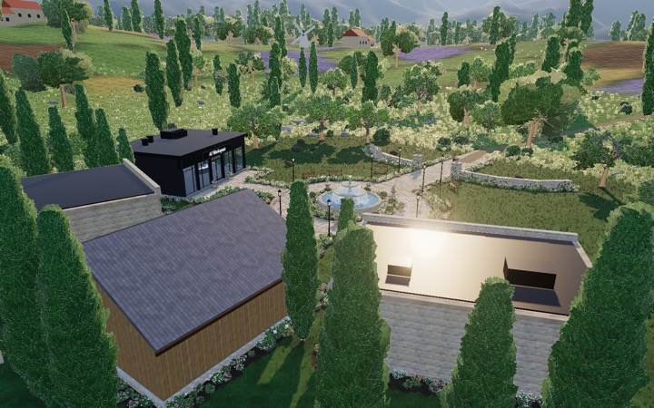
the windmill, top middle of corner-nw
v1.12026-09-23 20:52
Every check was broken on purpose, and every one went red
What changed
probe/mutants.mjs breaks one thing at a time (an exact text swap in the source, with a backup), runs the check that guards it, and requires a fail. Then it puts the code back and requires a pass. Results land in probe/data/mutants-all-5.json.
A gap it found first
Planning the bundle mutant showed the first network check was too weak: a static import would put probe code inside the main file, and a check for a separate probe file would still pass. The gate now reads every script body a normal visit downloads and fails if any contains __probe. The mutant proves it.
Final gate run
4 passed (59.4 s) on the finished code. Normal visit: 4 scripts, 886,504 bytes, no probe code.
stuck at (-5.14, -15.50), heading for waypoint 6/6
Fountain moved 0.5 m
diff.mjs vs baseline
red
green
44 of 45 images failed (aerial beauty 5,632 px); a clean quick tour: 0 failed
Fountain rim inside-out (the real bug, v0.4)
normals layer
red
green
124,067 flagged pixels, then 0
Heavier scene (Chase, FINDINGS.md)
measureGpu
moves the right way
low, medium, high: 4.33, 6.93, 11.57 ms per frame
Grass density doubled
cost meter
not clean
grass read 1.2, then 10.5, then -1.4 ms. Right way, but the spread overlaps
Why the cost mutant is not a pass
During that test the Mac's GPU was 92 to 99% busy before each pass, and the frame took 46 to 58 ms instead of about 10. The meter's own noise was 2 to 9 ms, as big as the effect. In the calm run earlier (v0.5) the same meter repeated to within 0.1 ms. So it works when the GPU is free, and I could not prove it under this load. I tried a low-percentile variant; it was no better, so I put the tested median back.
What is loading the GPU
With none of my browsers running the GPU sat at 83 to 90% busy. Pointing the notes node at a blank page for 10 s did not change it (88 to 89% before, 83 to 90% after). CNVS was the top process at 29% CPU. I did not dig further, because that is Luc's app and desktop.
$ node probe/mutants.mjs
=== freeze: world time not pinned broken: exit 1 (RED, good) restored: exit 0 (green)
| spawn: 23129 different pixels
=== bundle: probe imported statically into the main chunk broken: exit 1 (RED, good) restored: exit 0 (green)
| > 39 | expect(normal.filter((s) => s.url.includes('probe') || s.text.includes('__probe')).map((s) => s.url)).toEqual([]);
=== game: the E key no longer opens doors broken: exit 1 (RED, good) restored: exit 0 (green)
| FAIL {"expect":{"level":"music-studio","state":"play"},"timeout":20000} wanted level=music-studio state=play, got level=courtyard state=play (20016 ms)
=== game: a crate blocks the Music Studio doorstep broken: exit 1 (RED, good) restored: exit 0 (green)
| FAIL {"walkTo":"music-studio"} stuck at (-5.14, -15.50), heading for waypoint 6/6 (-5.4, -17.3) (15133 ms)
=== visual diff: fountain moved 0.5 m broken: exit 1 (RED, good) restored: exit 0 (green)
| FAIL desktop/views/aerial/beauty.png 5632 px (0.4346%), max delta 207
5/5 mutants caught and cleanly restored
$ npx playwright test tests/probe.spec.ts --project=desktop
normal visit: 4 scripts, 886504 bytes
✓ 1 [desktop] › tests/probe.spec.ts:31:1 › a normal visit downloads no probe code @desktop (10.8s)
spawn: 0 different pixels
fountain: 0 different pixels
aerial: 0 different pixels
✓ 2 [desktop] › tests/probe.spec.ts:47:1 › frozen shots are pixel-identical across two page loads @desktop (12.5s)
✓ 3 [desktop] › tests/probe.spec.ts:61:1 › every layer renders and the scene reads as data @desktop (6.9s)
✓ 4 [desktop] › tests/probe.spec.ts:88:1 › scripted play: walk to a building, go in, open a card, come back out @desktop (26.9s)
4 passed (59.4s)
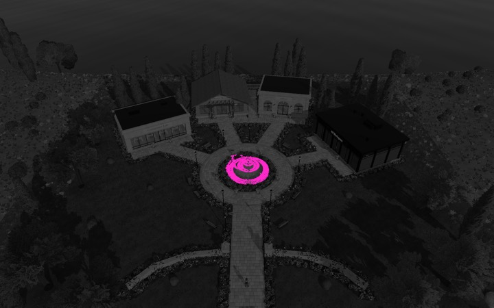
mutant · fountain moved 0.5 m · diff vs baseline
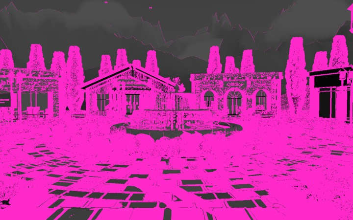
mutant · orbit eye 0° · diff
v1.02026-09-23 20:27
Clean full tour, a baseline, and the test suite still green
Tour result
All checks passed. 321 shots in 459 s. Repeat loads: 0, 0, 0 pixels different on both devices. All 34 canvas textures equal between loads. Play: 87 of 87 on desktop, 67 of 67 on phone, ending on the landing page both times.
Baseline
This run is now probe/baseline/: 250 images (views x layers and orbits, both devices; 271 MB). Play and cost shots are left out on purpose, since walked positions and timings vary.
Diff
This run against the baseline: 250 same, 0 failed, exit 0. The 19:49 run against it: 183 failed, because that run still used GPU-painted canvases. The diff images put the change on the paving grout lines and leaf specks, both canvas-painted textures. That is extra evidence for the theory in v0.9.
Heads-up
Frozen shots paint canvases on the CPU, so thin lines like paving grout can sit a pixel off from what visitors see. For repeatable pictures that is the price. Beauty shots outside frozen mode are unchanged.
Perf, again
Desktop perf was marked contended again: 36 fps, p95 50 ms, GPU 97% busy before the pass started. Sampled with nothing of mine running: the Mac's GPU sat at 88 to 96% busy, and CNVS was the top process at 29% CPU. Treat the desktop cost numbers from this run as inflated (base 24 ms). The phone pass had headroom: 60 fps, 4.7 ms.
Existing tests
10 passed, 3 skipped (the 3 skips need LEAVE_URL, PERF=1 or SITE_URL, as before). The 4 new gate tests are in there. look.spec printed 30.6 fps at spawn: it counts frames for 3 s with no GPU lock, so the same shared GPU explains it.
$ npx playwright test --project=desktop
Running 13 tests using 1 worker
✓ 1 [desktop] › tests/atlas.spec.ts:5:1 › atlas dump @desktop (862ms)
✓ 2 [desktop] › tests/hub.spec.ts:48:1 › boots cleanly and the canvas fills the viewport @desktop (8.1s)
✓ 3 [desktop] › tests/hub.spec.ts:60:1 › each door enters and exits by keyboard, and every project card opens @desktop (34.7s)
✓ 4 [desktop] › tests/hub.spec.ts:102:1 › static links version lists every project and link @desktop (141ms)
✓ 5 [desktop] › tests/hub.spec.ts:119:1 › skip to links opens the list and returns to the courtyard @desktop (6.2s)
- 6 [desktop] › tests/leave.spec.ts:8:1 › walking out the entrance goes back to the landing page @desktop
✓ 7 [desktop] › tests/look.spec.ts:23:1 › look views @desktop (29.5s)
- 8 [desktop] › tests/perf.spec.ts:7:1 › fps by part @desktop
✓ 9 [desktop] › tests/probe.spec.ts:31:1 › a normal visit downloads no probe code @desktop (12.5s)
spawn: 0 different pixels
fountain: 0 different pixels
aerial: 0 different pixels
✓ 10 [desktop] › tests/probe.spec.ts:42:1 › frozen shots are pixel-identical across two page loads @desktop (15.1s)
✓ 11 [desktop] › tests/probe.spec.ts:56:1 › every layer renders and the scene reads as data @desktop (8.5s)
✓ 12 [desktop] › tests/probe.spec.ts:83:1 › scripted play: walk to a building, go in, open a card, come back out @desktop (28.5s)
- 13 [desktop] › tests/site.spec.ts:10:1 › landing to hub and back @desktop
3 skipped
10 passed (2.5m)
$ node probe/diff.mjs --approve probe/shots/20260923-201647
baseline <- probe/shots/20260923-201647: 250 images
$ node probe/diff.mjs probe/shots/20260923-201647
compared 250 images (tol 6, max 0.05%): 250 same, 0 small drift, 0 failed
$ node probe/diff.mjs probe/shots/20260923-194926
compared 250 images (tol 6, max 0.05%): 2 same, 65 small drift, 183 failed
FAIL desktop/orbits/fountain-stone/eye-000.png 20532 px (1.5843%), max delta 210
...
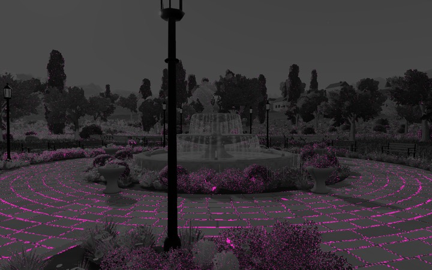
diff · GPU vs CPU canvases · magenta = changedcorner-nw (moved outside the garden, 16 m up)corner-se
Two pixels drifted on one run. Mitigated, cause not proven
What happened
In the full tour, the desktop aerial shot on the second page load differed from the first load by 2 pixels, 1 colour step each (blue 175 vs 174). The other 5 repeat pairs in that run were 0. The Mac's GPU was 94% busy before that run, from outside load.
How it was traced
The id layer names the object under any pixel. Both pixels sit on computer-lab/sign-Computer Lab. Signs are painted on 2D canvases (gradients plus text) and uploaded as textures. Chrome can paint a canvas on the GPU or the CPU and may switch with load, and the two upload paths can round differently.
What changed
Frozen mode now forces every 2D canvas onto the CPU (willReadFrequently: true) before the world is built. &gpucanvas turns that off for testing.
New __probe.textures(): a fingerprint of all 34 canvas textures. The tour compares them between loads and names any that differ.
Still unverified
I could not make it happen again. 10 more fresh loads with a second hub rendering alongside, 6 of them with the fix off: all 0 pixels different, all 34 texture fingerprints equal. So the fix is a reasoned guess, not a proven one. The tour keeps checking every run and will flag it if it comes back.
The fps answer: 60, and the dips come from sharing the GPU
Answer
True fps is 60, the display cap, at 1440x900 Medium. The real GPU cost is about 7 ms per frame, so there is plenty of room. The 31, 38 and 47 readings happened when another GPU job ran at the same time: a second headless hub drops it to 35 to 52.
Why it lands near 30 or in the 40s
The frame has 16.7 ms. When a shared GPU pushes a frame past that, it waits for the next slot, so frames take 33 ms. A mix of on-time and late frames gives numbers in the 40s. The Mac is also never idle: its GPU was 80 to 88% busy before nearly every run, from the CNVS app and the desktop.
Who and how
Worker Chase (Opus 5.5, medium effort) ran 27 fresh browsers: 9 conditions, 3 runs each, round robin, with a GPU lock so runs never overlapped. Full write-up: probe/perf/FINDINGS.md. Raw data: probe/shots/perf-study/.
Ruled out
Warm-up: first second was 59 to 60 in all 21 clean runs.
Headless pacing: empty pages hit 60; with vsync off the hub ran 80 to 99.
Browser build: headless shell, full Chromium, WebKit all gave 60.
Pixels: 1.96x the pixels raised cost 5.8 to 8.8 ms, still 60.
Condition (3 runs each)
steady fps
GPU ms per frame
timer ms
headless 1440x900 medium
60 [60-60]
6.93
11.36
headless 1440x900 low
60 [60-60]
4.33
3.85
headless 1440x900 high
60 [60-60]
11.57
17.6
headless 1280x720 medium, Retina scale 2
60 [60-60]
8.8
14.6
headless 1440x900 medium, vsync off
84 [80-99]
8.11
13.13
1440x900 medium + a 2nd hub at the same time
38 [35-52]
19.58
29.44
What the tour does now
Holds probe/.gpu-lock for its whole browser session, logs whole-Mac GPU busy % first, reports median fps plus the 95th-percentile frame time, and GPU ms per frame with no pacing. A p95 over 25 ms marks the run contended.
It already caught one
The first full tour's desktop perf pass read 47 fps, p95 33.4 ms, 16.7 ms per frame, with the GPU 94% busy before it started. The tour marked it CONTENDED. The phone pass 2 minutes later read 60 fps and 4.5 ms.
Not tested
A real on-screen browser. Headless only, by rule; Retina was simulated with scale 2.
v0.72026-09-23 19:56
Phase F: one command tours everything on desktop and phone
What changed
probe/tour.mjs: builds the site under /hub/ into probe/.dist, serves it with a stub landing page at /, then per device runs 3 page loads: frozen views, a fresh repeat load plus scripted play, and a live perf pass.
probe/lib.mjs: the server, GPU lock, and a PNG reader and writer built only on Node's own zlib.
probe/diff.mjs: compares a run with probe/baseline/, writes diff images, exits 1 past the threshold.
Numbers, first full run
321 shots in 383 s. Desktop 1440x900 and phone 412x839 (Pixel 7). 11 views x 7 layers per device, 2 orbits of 24 shots, cost heatmaps, 87 play steps on desktop and 67 on phone. 269 MB on disk.
Where
Run folder probe/shots/20260923-194926/. Open contact.html for the grid of every shot. Also in the folder: manifest-*.json, legends-*.json, steps-*.json, perf.json, run.json.
$ node probe/tour.mjs
[ 6s] desktop ready 5379 ms ANGLE (Apple, ANGLE Metal Renderer: Apple M5, Unspecified Version) 1440x900 tier medium
[ 12s] desktop 11 views x 7 layers
[ 122s] desktop orbits fountain-stone x24, music-studio x24
[ 128s] desktop repeat load, pixels different: spawn=0 fountain=0 aerial=2
[ 204s] desktop play PASS 87 steps
[ 227s] desktop perf fps median 47, p95 frame 33.4 ms batch 16.74 ms/frame, ceiling 59.7 fps GPU busy before 94% CONTENDED
[ 289s] phone repeat load, pixels different: spawn=0 fountain=0 aerial=0
[ 363s] phone play PASS 67 steps
[ 383s] phone perf fps median 60, p95 frame 16.7 ms batch 4.47 ms/frame, ceiling 223.7 fps GPU busy before 94%
[ 383s] done: 321 shots in 383 s -> probe/shots/20260923-194926/contact.html
PROBLEMS:
desktop: repeat aerial differs by 2 px
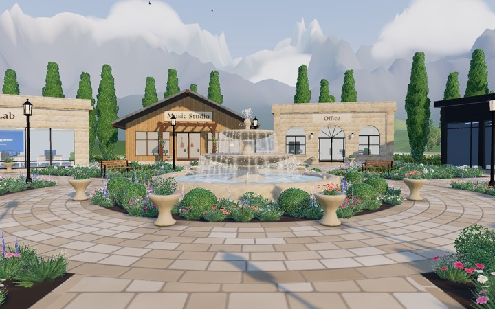
orbit · fountain · eye 0°
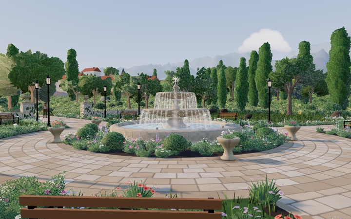
orbit · fountain · eye 135°
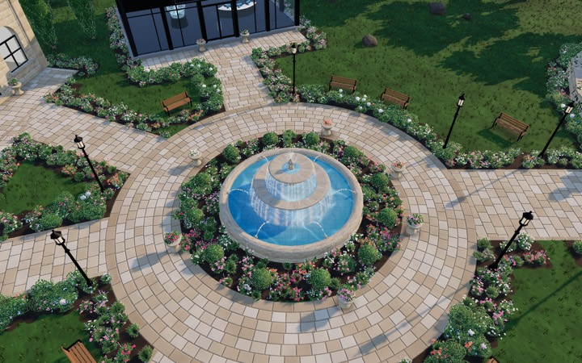
orbit · fountain · high 270°
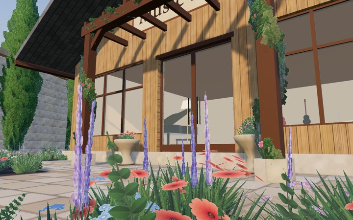
orbit · music studio door · low 45°
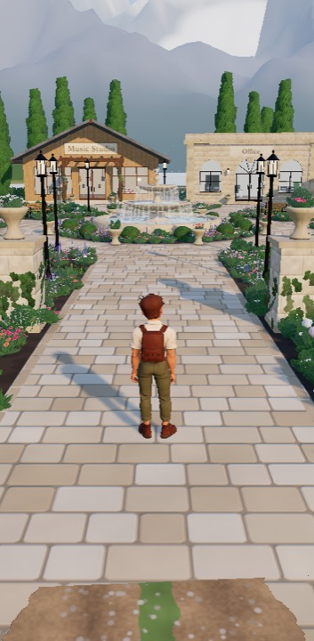
phone · spawn · beauty
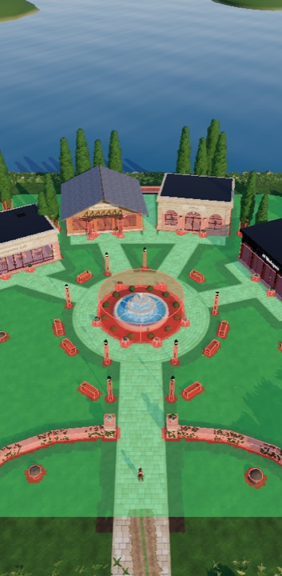
phone · aerial · walkable
v0.62026-09-23 19:47
Phase E: the probe plays the hub start to finish
What changed
__probe.run(steps) runs steps in order and returns pass or fail with a reason for each. Steps: walkTo (a building, an exhibit, an exit, or x,z), press, hold, wait, expect (level, state, cardOpen, nearest, leaving), shot, teleport, leave.
How walking works
It builds a 25 cm walk grid from the game's own collision code, plans a path with A* (a shortest-route search), and steers with the same stick input a phone thumbstick uses. So it hits the same walls a player would. It fails with a reason if the player stalls for 2.5 s.
What it covered
Every building: walk to the door, press E, check the level, take shots inside, walk to an exhibit, press E, check the card opened, Escape, walk to the exit, press E, check the courtyard. Then walk out the gate and check the browser lands on the landing page.
Result
Desktop 87 of 87 steps passed. Phone 67 of 67. After leaving, the browser went to /#from-hub on the stub landing page, the same hash the real site uses.
Level names
The plan's example said musicStudio. The game's real level id is music-studio, so steps use that.
Note
The card is HTML on top of the 3D canvas, so a canvas shot cannot show it. The tour takes a page screenshot for the card instead, with CSS transitions jumped to the end.
$ __probe.run([...]) # music studio, from the dev run
ok {"walkTo":"music-studio"} ok 11178ms {"level":"courtyard","x":-5.4,"z":-17.05}
ok {"press":"KeyE"} ok 236ms
ok {"expect":{"level":"music-studio","state":"play"}} ok 1921ms
ok {"walkTo":"music-studio:0"} ok 2632ms {"level":"music-studio","x":0,"z":-2.05}
ok {"press":"KeyE"} ok 32ms
ok {"expect":{"cardOpen":true}} ok 0ms
ok {"press":"Escape"} ok 36ms
ok {"expect":{"cardOpen":false}} ok 0ms
ok {"walkTo":"music-studio:exit"} ok 3199ms {"level":"music-studio","x":0,"z":4.75}
ok {"expect":{"level":"courtyard","state":"play"}} ok 1408ms {"level":"courtyard","x":-5.14,"z":-15.42}
leave {"pass":true,"ms":11819,"at":{"x":0,"z":24.3}} left to http://127.0.0.1:60612/#from-hub
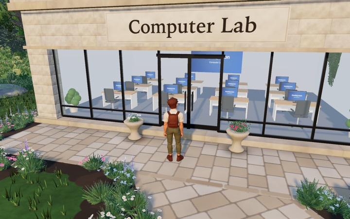
play · at the Computer Lab door
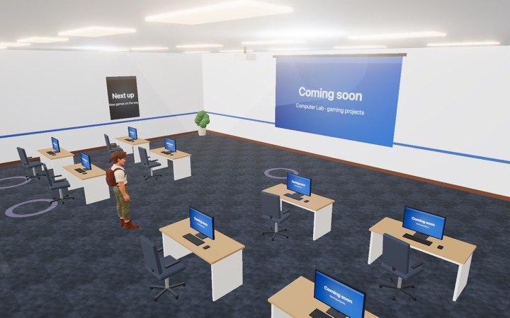
play · Computer Lab overview
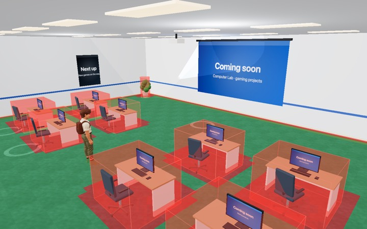
play · Computer Lab walkable
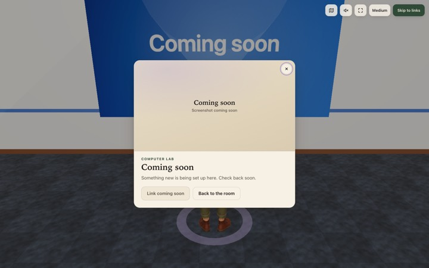
play · Computer Lab card (page screenshot)
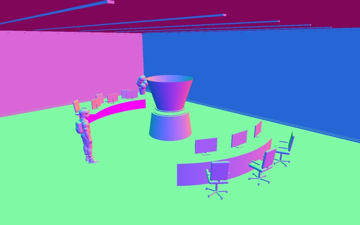
play · AI Workspace normals
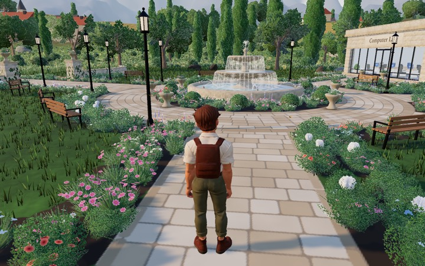
play · back in the courtyard
v0.52026-09-23 19:50
Cost layer: which parts of the scene eat GPU time
What changed
await __probe.cost({ view }) hides one part at a time and times the frame on the GPU. The cost layer paints each part by its share: dark blue cheap, red expensive.
First version was too noisy
One shown, hidden, shown pass per part gave a sum of parts of -6.72 ms against a 14 ms frame. Rewritten: 40 warm-up frames (the GPU speeds up over the first frames), then 3 rounds of shown and hidden per part, median of the 3.
Now it repeats
Two runs back to back on one page: player 2.66 and 2.56 ms, bed foliage 1.39 and 1.41 ms, cypress leaves 0.85 and 0.56 ms. Uses the WebGL GPU timer query, which this Chromium has.
Finding: the player model
Luc's model costs about 2.6 ms of a 10 ms frame from the spawn view. It is 19k triangles with one double-sided material and 3 textures, so the triangle count is not the reason. The tour now also measures from the aerial view, where the model is tiny, to split screen-area cost from fixed cost.
Negative numbers are real
Buildings read -0.5 to -0.7 ms. Hiding a building uncovers the leaves and grass behind it, which cost more to draw than the wall did. The noise on those is only 0.04 to 0.12 ms.
Unverified
Under outside GPU load the numbers inflate (the first full tour read a 20.6 ms base). Compare cost only between runs the tour did not mark contended.
$ __probe.cost({ view: 'spawn' }) # twice, same page
run 1: 20862 ms, base 10.904 gpu, sum of parts 3.25
player:2.655±0.166 (19k tri) bed-foliage:1.391±0.108 (35k tri) cypress-leaf:0.852±0.055 (35k tri)
lowest: ground:-0.376±0.676, props-batch:-0.397±0.099, computer-lab:-0.502±0.04, ai-workspace:-0.512±0.054
run 2: 22360 ms, base 10.363 gpu, sum of parts 5.084
player:2.559±0.108 (19k tri) bed-foliage:1.407±0.117 (35k tri) grass:0.613±0.135 (924k tri)
lowest: props-batch:-0.301±0.05, ground:-0.422±0.07, ai-workspace:-0.708±0.092, computer-lab:-0.713±0.118
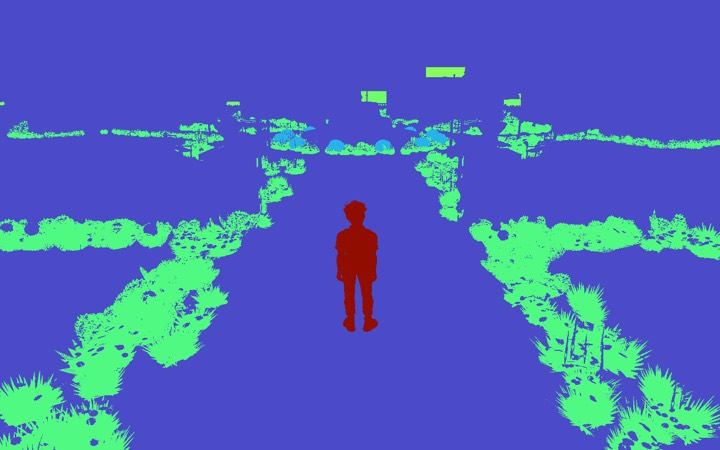
cost · spawn (first version)
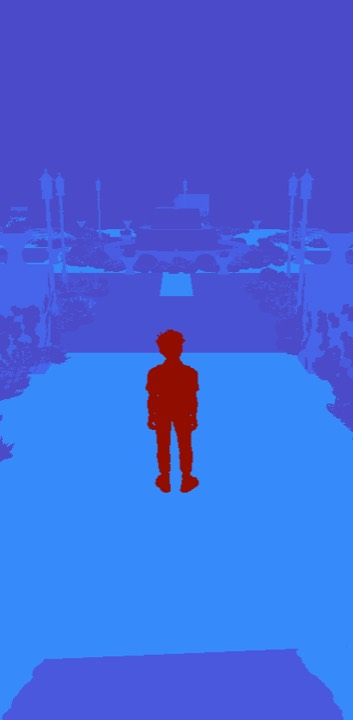
cost · phone spawn
v0.42026-09-23 19:44
Bug found by the normals layer: the fountain rim was inside-out
What was wrong
The fountain's outer rim is a lathe (a 2D outline spun around the centre). Its outline was traced in the wrong direction, so every face pointed into the stone. The renderer skips faces that point away, so you saw the inner wall through the outer one: flat, grey, with no stone texture where it should be.
How it showed up
The normals layer paints the back of any one-sided face magenta. From the spawn view the whole rim ring was magenta, and the legend named fountain-stone as the owner of 3,061 flagged pixels. A close-up had 124,067.
What changed
One line in src/world/fountain.ts: the rim outline now runs outside-in. Same points, reversed. Not deployed.
How it was checked
Same camera, before and after. Flagged pixels on the fountain went from 124,067 to 0. What is left in that frame (2,201 px) is open tree trunks seen from above, which is expected.
For Luc
The rim now looks like the rest of the fountain: textured stone with a lit top and a shadow. That changes the live look once deployed, so please eyeball the two shots below.
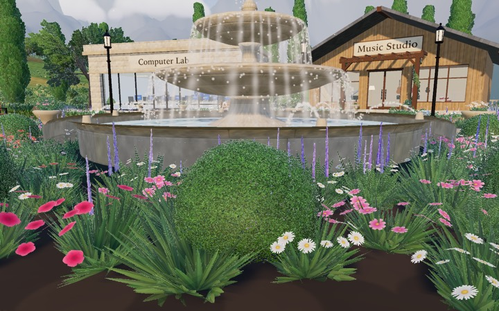
before · beauty · flat grey rim
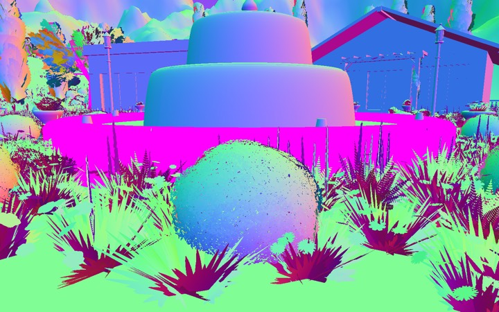
before · normals · rim is magenta
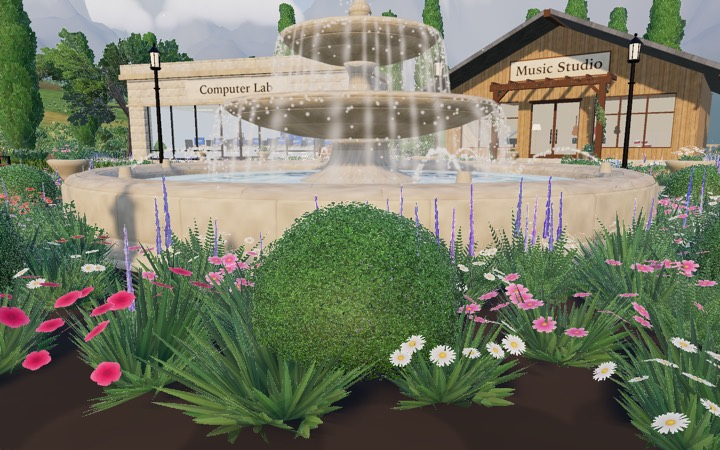
after · beauty · stone rim with shadow
v0.32026-09-23 19:40
Phases A to D: frozen pictures, the scene as data, any camera, eight layers
A · frozen mode
?probe&freeze fixes world time at 10 s and the day at golden hour (&phase= to change), turns wind off, puts clouds back at their start angles, settles doors, and puts the player in the idle pose at frame 0. Pixel ratio 1, canvas fixed at the viewport size. Math.random is seeded.
B · the scene as data
__probe.manifest(): 504 objects, 370 drawn, 2,529,469 triangles, 174 casting shadows, 42 named parts, each with path, type, world position, bounding box, triangles, draw calls, materials, visibility and part. One full frame: 465 draw calls. find('fountain') or find('/bark$/') looks things up.
C · cameras
shot({ view | from, lookAt, fov, layer, size }) returns a PNG. 11 named views in the courtyard: spawn, fountain, aerial, 4 corners, 4 doors. Inside, an overview plus one per exhibit and exit. orbit(target): 8 angles x low, eye, high.
D · layers
id: a unique flat colour per object; the legend maps each colour to its manifest id and path, with its share of the frame.
depth: white near, black at 120 m (20 m indoors).
normals: surface direction as colour. Magenta = back of a one-sided face, yellow = no normal, each counted per object.
wireframe, one colour per part.
walkable: 2,262 m² where the player can stand (green), 85 colliders (red), from the game's own collision code.
triggers: door, exhibit and exit zones with their radius, plus the walk-out zone at the gate.
How it was checked
Two shots of one view on one page: 0 pixels different. Two fresh page loads: 0 pixels different for fountain (dev run), and spawn, fountain, aerial on phone in the full tour. The id legend had no colour that failed to map to an object.
Speed
A shot takes 100 to 300 ms at 1440x900 (id layer about 0.5 s the first time, while its shaders compile). The walk grid takes 0.8 s once per level.
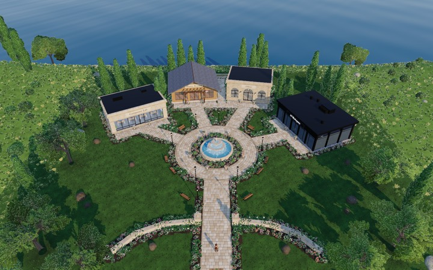
aerial · beauty
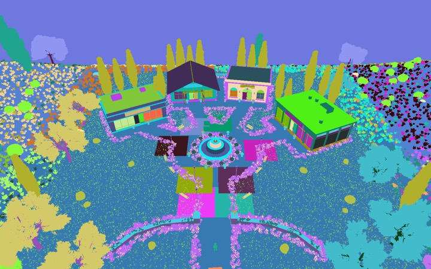
aerial · id
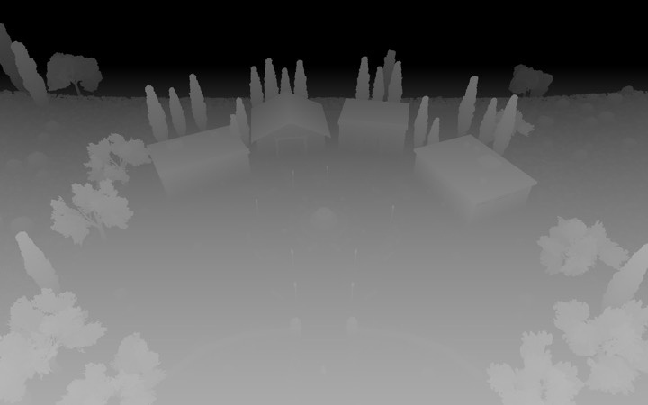
aerial · depth
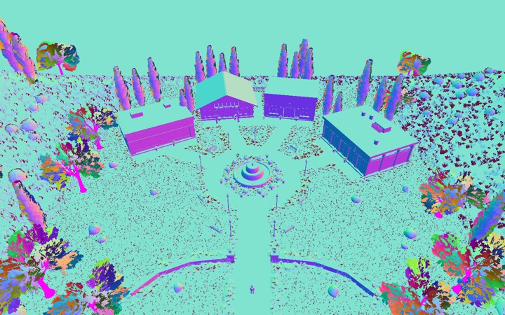
aerial · normals
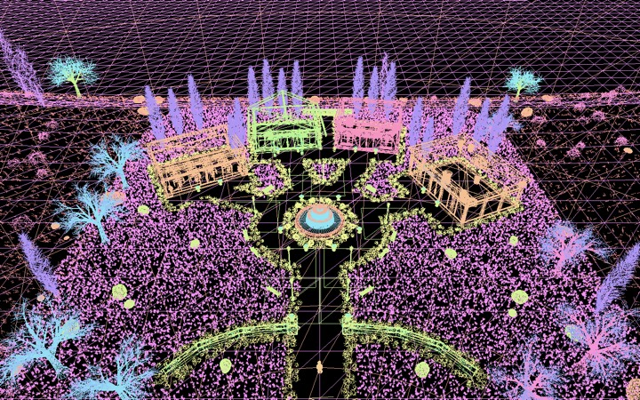
aerial · wireframe
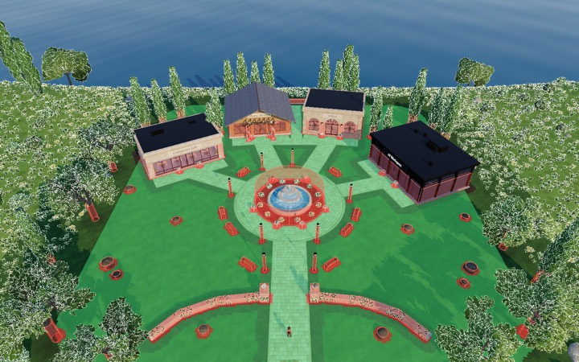
aerial · walkable
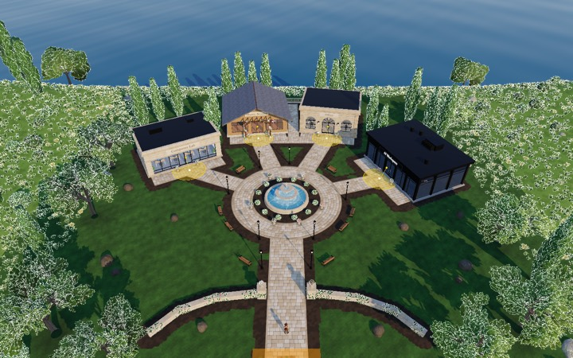
aerial · triggers
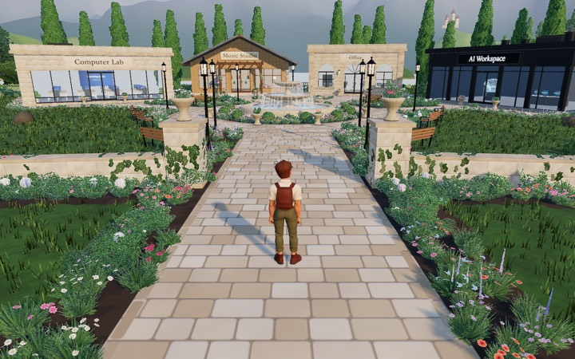
spawn · beauty
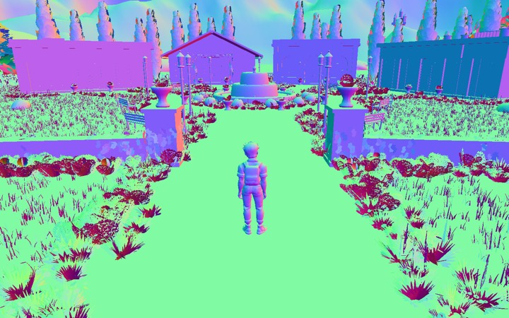
spawn · normals
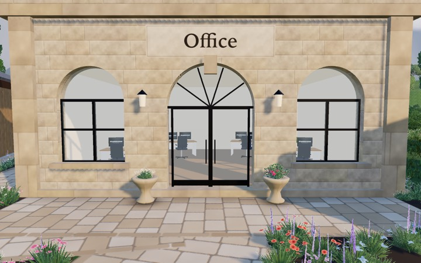
door-office · beauty
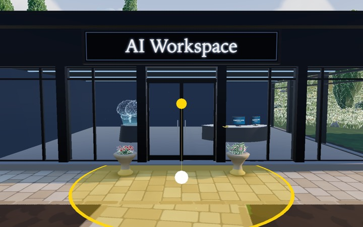
door-ai-workspace · triggers
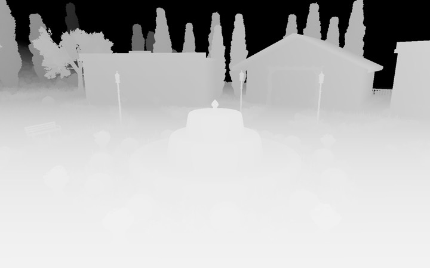
fountain · depth
v0.22026-09-23 19:22
Probe hooks in, and visitors pay 246 bytes for them
What changed
src/main.ts: with ?probe, loads src/probe/probe.ts by dynamic import, seeds Math.random before the world is built, then hands the running app to the probe.
src/core/app.ts: a probeDt hook (the probe can set each frame's time step, 0 freezes the world), leaving made readable, shared uniforms exposed.
src/world/sky.ts: each cloud remembers its start angle, so frozen mode can put it back.
Why
The probe needs a few handles into the running app. Everything else lives in its own chunk that only ?probe fetches.
Bug caught on the way
The first build leaked: the probe imported two small app modules, so the bundler split them into a new shared chunk every visitor would fetch, and three grew 1.4 KB from probe-only classes. Fixed by reaching those values through the app object and dropping two probe-only three.js classes.
file (hash removed)
before
after
change
assets/index.js (entry)
4,958
5,105
+147
assets/app.js
117,676
117,740
+64
assets/three.js
722,477
722,509
+32
assets/kit.js
9,771
9,776
+5
assets/furniture.js
41,160
41,158
-2
index.html, css, 4 interiors
same
same
0
assets/probe.js (only with ?probe)
none
27,030
new
How it was checked
npm run build before touching any source (saved to probe/data/bundle-before.txt), then after (bundle-after.txt). Net change for a normal visitor: +246 bytes, no new files. Limit was 1 KB. A network check (no probe script fetched without ?probe) runs in the gate test, see later entries.
v0.12026-09-23 19:06
Starting point: the smoke test works
What ran
node probe/smoke.mjs against the live site: load, freeze the time of day, list the buildings, walk with W, move the camera up, save three PNGs.
Snag
Inside Claude's command sandbox, Chromium dies at launch (bootstrap_check_in ... Permission denied (1100)). Every headless run is started outside that sandbox. That is a property of the agent's shell, not of the hub.
Numbers
Ready in 5.8 s, Medium tier, 4 buildings, no errors, 38 fps at 1440x900 (earlier runs: 31 and 47). The swing is the open question.
$ node probe/smoke.mjs
play at 5.8s tier medium level courtyard
fps 38.0 gpu ANGLE (Apple, ANGLE Metal Renderer: Apple M5, Unspecified Version)
interactables computer-lab, music-studio, office, ai-workspace
errors none done at 12.7s